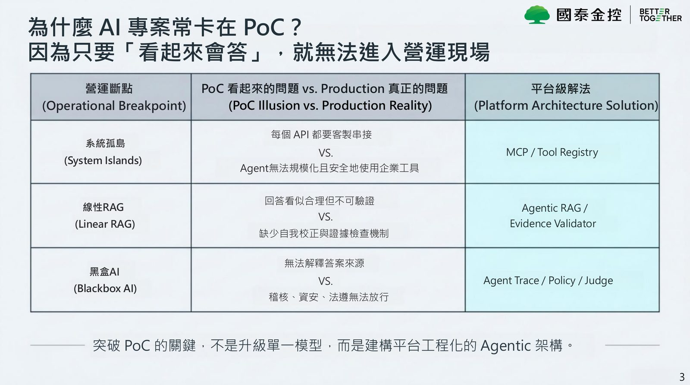
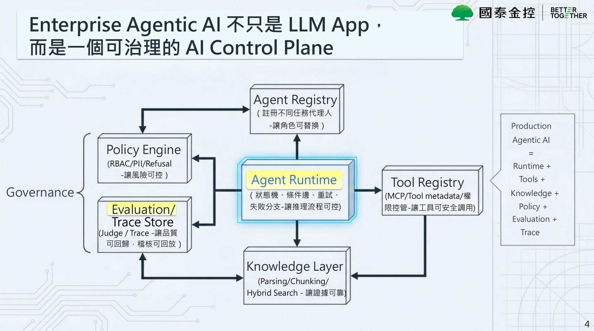
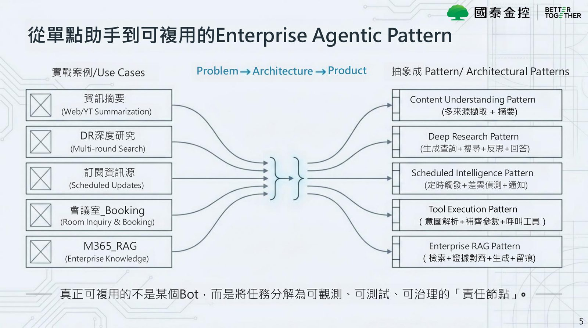
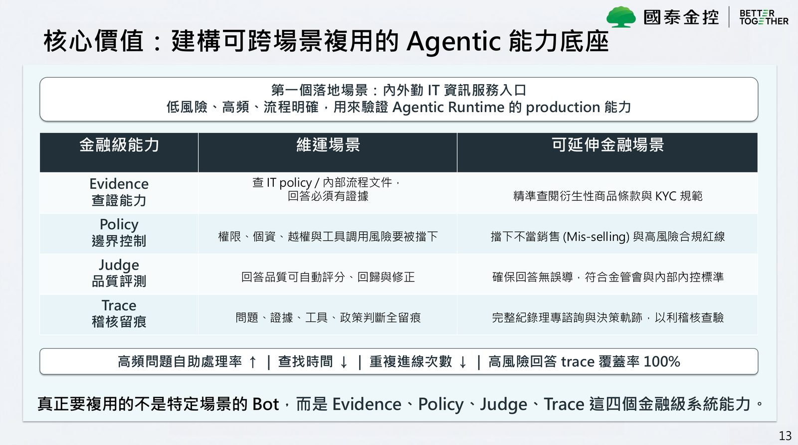

摘要
本演講深入探討金融級 Enterprise Agentic AI 的架構設計，直擊企業 AI 專案從 PoC 邁向生產環境時常遭遇的三大營運斷點：系統孤島、線性 RAG 幻覺與黑盒 AI 無法審計。為滿足金融業對高度信任、可稽核與安全合規的硬性要求，講者張維峻（Justin）提出了平台工程化的「Agentic Operating System」與「AI Control Plane」架構。該架構包含 Agent Registry、Policy Engine、Tool Registry、Knowledge 知識層與 Evaluation/Trace 五大核心模組，並規劃三道推理防線（Evidence 證據邊界、Policy 政策邊界、Human 人類介入邊界）。實務上以 15 個以上職責分組的 Agent 協作，在評測中取得 98% 加權準確率與 0 題不安全回答的亮眼成績。演講指出，金融 AI 的關鍵不在模型大小，而在於建構可觀測、可驗證且具備自我校正能力的 Agentic RAG 工作流。
重點整理
- 金融場景的AI核心問題不是「能不能回答」，而是「能不能被信任」，需具備查證、評估證據充分性、不確定時拒答、高風險升級、留下Agent Trace五項能力
- PoC常卡關的三個突破點：系統孤島改採MCP/Tool Registry、線性RAG改為具自我校正能力的Agentic RAG、黑盒AI改為具備Agent Trace/Policy/Judge的可治理架構
- 架構核心是Enterprise Agentic AI Control Plane，由Agent Registry、Policy Engine、Tools/Tool Registry、Knowledge Layer與Evaluation/Trace五大模組組成，並以15+個Agent依責任分組而非堆疊微服務
- 推理流程設有Evidence Boundary、Policy Boundary、Human Boundary三道防線，任一防線失敗即觸發Rewrite Query、Refuse或Human-in-the-loop升級
- 以100題低風險IT/流程任務進行LLM-as-a-Judge內部評測，加權準確率達98%、0題不安全回答，並在第一個落地場景（內外勤IT資訊服務入口）驗證後，規劃延伸至衍生性商品條款查詢、KYC規範等金融場景
重點圖片／架構圖




金融場景的硬性要求
講者以理財專員在客戶現場面對突發複雜商品詢問為例，說明金融場景對AI的要求遠高於一般聊天機器人：AI必須查得到正確證據（Retrieve accurate evidence）、能判斷證據是否足夠（Assess evidence sufficiency）、在不確定時拒答或追問（Refuse or clarify when uncertain）、將高風險任務升級給人（Escalate high-risk tasks），並且每一次回答都要留下Agent Trace（Log every action）。講者強調，金融AI的核心問題不是「能不能回答」，而是「能不能被信任」。
為什麼AI專案常卡在PoC
講者指出PoC看似能回答，但生產環境的真正問題在於三個斷點：其一是系統孤島，每個API都需要客製串接，解方是導入MCP/Tool Registry；其二是線性RAG，回答看似合理但不可驗證，缺少自我校正與證據檢查機制，解方是導入Agentic RAG與Evidence Validator；其三是黑盒AI，無法解釋答案來源，導致稽核、資安、法遵無法放行，解方是建立Agent Trace、Policy與Judge機制。講者總結，突破PoC的關鍵不是升級單一模型，而是建構平台工程化的Agentic架構。
Enterprise Agentic AI Control Plane架構
講者提出的架構將Enterprise Agentic AI定位為一個可治理的AI Control Plane，而非單純的LLM App，核心模組包括：Agent Registry（註冊不同任務代理人，讓角色可替換）、Policy Engine（RBAC/PII/拒答策略與工具風險控管，讓風險可控）、Tools與Tool Registry（MCP與工具metadata、權限控管，讓工具可安全調用）、Knowledge Layer（Parsing/Chunking/Hybrid Search，讓證據可靠），以及Evaluation與Trace（Judge與Trace Store，讓品質可回歸、稽核可回放）。整體推理主路徑由Query Normalizer、Intent Classifier、Query Router、Retrieval/Tool Agent、Evidence Validator、Answer Generator、Policy Guard到Trace Logger串接而成，並以15+個Agent依Understanding、Routing、Knowledge、Tool、Verification、Generation、Evaluation/Planning等責任分組管理，而非單純堆疊微服務。
Agentic RAG與三道推理防線
相較於傳統RAG僅是「檢索→生成」的單向流程，Agentic RAG是具自我校正能力的工作流，包含Query Router判斷來源以避免找錯資料、Evidence Validator檢查證據是否足夠以防止幻覺、Rewrite_query在證據不足時自動重寫查詢，以及Refusal Agent在不該回答時明確拒答。推理過程設有三道防線：Gate 1 Evidence Boundary檢查證據充分性與來源一致性，失敗則重寫查詢或拒答；Gate 2 Policy Boundary檢查RBAC、PII過濾與拒答政策，失敗則拒答並記錄違規；Gate 3 Human Boundary判斷是否涉及高風險決策需人類介入，失敗則觸發Human-in-the-loop。講者強調Agentic AI的核心價值不是完全自主，而是在可控邊界內自主。
評測成效與落地場景
團隊以100題低風險IT/流程任務（涵蓋高頻FAQ、同義改寫、應拒答題、陷阱題與邊界題）進行LLM-as-a-Judge評測並輔以人工抽查20題，結果顯示完整Agentic RAG流程的加權準確率達98%、嚴格正確率96%、0題不安全回答，優於單純Hybrid Search（87.0%）與Naive RAG（83.5%）的Ablation比較結果，延遲表現為平均3.56秒、P50 3.59秒、P95 6.19秒。第一個落地場景選定內外勤IT資訊服務入口，作為驗證Agentic Runtime生產能力的低風險、高頻、流程明確的場景，並規劃將Evidence、Policy、Judge、Trace四項金融級能力延伸至衍生性商品條款查詢、KYC規範確認、防止不當銷售(Mis-selling)等金融場景。演講總結，金融業AI競爭的下一階段不在於模型大小，而在於能否把AI工程化為可營運、可治理、可複用的Agentic Operating System。